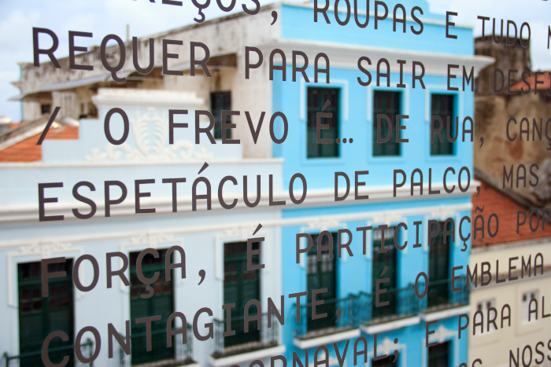
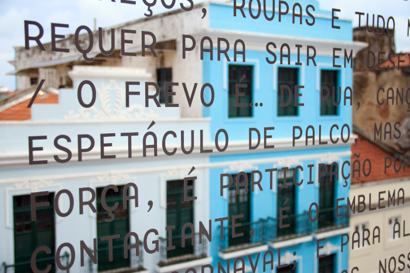

Inaugurado no dia 9 de fevereiro de 2014 na antiga sede da Western Telegraph Company, construído em estilo neoclássico tardio inglês e tombado pelo IPHAN, o Paço do Frevo é um espaço cultural dedicado à difusão, pesquisa, lazer e formação nas áreas da dança e música do frevo.
Endereço: Praça do Arsenal da Marinha, S/N. Bairro do Recife-PE
Além de bonito, o Paço está constantemente em uso, está aberto quase todos os dias da semana, com uma programação que vai de shows (o mais recente foi uma homenagem a Moraes Moreira, performada por seu filho Davi Moraes e Almério), aulas e ensaios de frevo com Maestro Ozéas